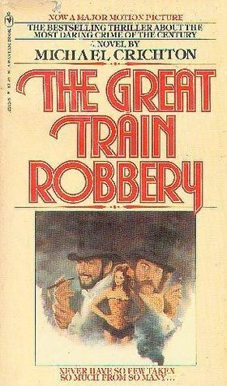

"The Great Train Robbery"
- Read on 2020-07-08
- Rating: ️️️️️
- Format: 🎧 (8 hours 39 minutes)
One of the best books turned into a movie. Really, very well done. It's a story I enjoy, about a time period I don't know much about. Simple twists, and turns to keep the reader guessing. It's simple fun. Be careful of the chapter about a character needing to deflower a virgin to cure himself of some VD - it's a highly unnecessary scene and portion.
- Prior: Secret History
- Next: Born a Crime